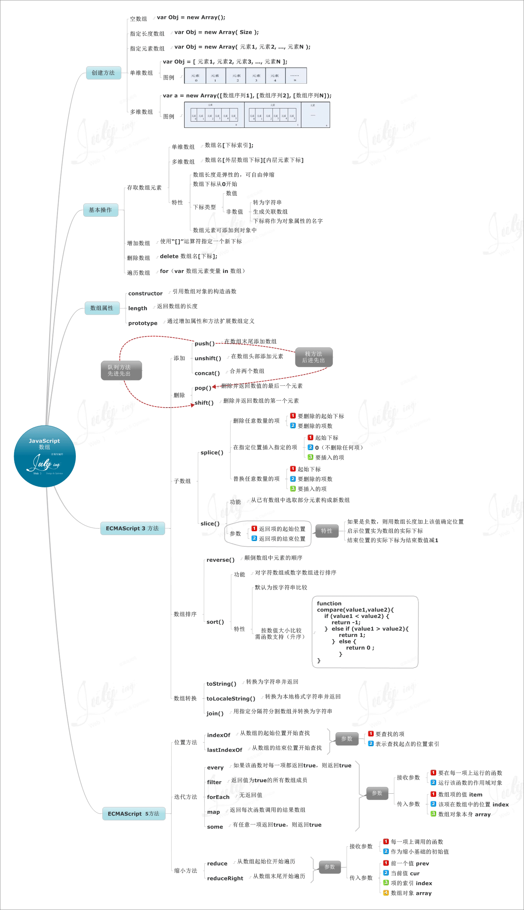

数组
前言
本人平时学习及收集内容，欢迎参入一起讨论。
内容
一、创建数组
创建数组一共两种方式，分别如下：
- 数组字面量
- 数组构造函数
1.1 数组字面量
var arr = [];
var arr = [1, 2, 3];
var arr = [[1],2,[2,[123]]];
2
3
4
1.2 数组构造函数
var arr = new Array(); //[]
var arr = new Array(1,2,3); //[1, 2, 3]
var arr = new Array(3); //每种浏览器结果不一样，IE[undefined,undefined,undefined] 参数3为数组length，chrome返回结果：[undefined,x,3]
var arr = new Array([1],2,[2,[123]]); //[[1],2,[2,[123]]]
2
3
4
5
二、数组属性
- length属性
- prototype属性
- constructor属性
2.1 length属性
length属性返回数组的长度，是一个可变属性，表示一个数组中的元素个数。
var arr = [1,2,3];
arr.length // 3
arr.length = 2; //改变数组length，从后往前截取
arr // [1,2],此时arr.length为2。所以平时我们可以用length来操作数组（删除，添加）
arr.length = 4;
arr // // [1,2,undefined,undefined],此时arr.length为2,后面填充undefined
2
3
4
5
6
7
2.2 prototype属性
prototype属性返回对象类型原型的引用，所有的数组实例都继承了这个属性，所有的数组方法都定义在 Array.prototype 身上。
//给数组添加个方法，返回数组中的最大值
Array.prototype.max = function() {
return Math.max.apply(null,this);
}
[1,2,3,4].max(); //4
//给数组添加个方法，给数组去重
Array.prototype.unique = function() {
return this.filter((item, index, arr) => arr.indexOf(item) === index);
}
[11,2,1,1,2,3,1,2,4,5,23,2].unique(); //[11, 2, 1, 3, 4, 5, 23]
2
3
4
5
6
7
8
9
10
11
12
2.3 constructor属性
constructor属性返回创建对象的函数，即构造函数。
var arr = [1,2,3];
arr.constructor //function Array() { [native code] }
arr.constructor === Array //true 即 new Array
var a = new Array();
a.constructor === Array //true
2
3
4
5
6
三、数组判断
- Array.isArray()
- Object.prototype.toString.call()
- instanceof
3.1 Array.isArray()
Array.isArray([]); //true
Array.isArray([1,2,3]); //true
Array.isArray(new Array()); //true
Array.isArray(); //false
Array.isArray({}); //false
Array.isArray(123); //false
Array.isArray('xzavier'); //false
2
3
4
5
6
7
3.2 Object.prototype.toString.call()
Array.prototype.isArray = Array.prototype.isArray || function() {
return Object.prototype.toString.call(this) === "[object Array]";
}
[1,2,3].isArray(); //true
2
3
4
5
3.3 instanceof
[1] instanceof Array
2
四、数组遍历
4.1 for
for (var index = 0; index < arr.length; index++) {
console.log(arr[index]);
}
2
3
4
4.2 forEach
forEach 方法按升序为数组中含有效值的每一项执行一次callback 函数，那些已删除或者未初始化的项将被跳过（例如在稀疏数组上）。
arr.forEach(function (value) {
console.log(value);
});
2
3
4.3 for-in(不推荐使用)
for (var i in arr) {
console.log(arr[i]);
}
2
3
4
4.4 Es6的for-of
for (var value of arr) {
console.log(value); // 1 2 3
}
2
3
4.5 map
map()方法创建一个新数组，其结果是该数组中的每个元素都调用一个提供的函数后返回的结果，原始数组不会改变。传递给 map 的回调函数（callback）接受三个参数，分别是 currentValue、index（可选）、array（可选），除了 callback 之外还可以接受 this 值（可选），用于执行 callback 函数时使用的this 值。
const arr1=[1,2,3,4];
const arr2=arr1.map(item=>item*2);
console.log(arr2);
// [2, 4, 6, 8]
console.log( arr1 );
// [1, 2, 3, 4]
2
3
4
5
6
7
8
4.6 every
every()方法测试一个数组内的所有元素是否都能通过某个指定函数的测试。它返回一个布尔值。
function isBelowThreshold(currentValue) {
return currentValue < 40;
}
var array1 = [1, 30, 39, 29, 10, 13];
console.log(array1.every(isBelowThreshold));
// expected output: true
2
3
4
5
6
7
8
9
4.7 filter
filter() 方法创建一个新数组, 其包含通过提供函数实现的测试的所有元素，原始数组不会改变。接收的参数和 map 是一样的，其返回值是一个新数组、由通过测试的所有元素组成，如果没有任何数组元素通过测试，则返回空数组。
const arr1 = [1, 2, 1, 2, 3, 5, 4, 5, 3, 4, 4, 4, 4];
const arr2 = arr1.filter( (element, index, self) => {
return self.indexOf( element ) === index;
});
console.log( arr2 );
// [1, 2, 3, 5, 4]
console.log( arr1 );
// [1, 2, 1, 2, 3, 5, 4, 5, 3, 4, 4, 4, 4]
2
3
4
5
6
7
8
9
10
11
4.8 some
some() 方法测试是否至少有一个元素可以通过被提供的函数方法。该方法返回一个Boolean类型的值。
var array = [1, 2, 3, 4, 5];
var even = function(element) {
// checks whether an element is even
return element % 2 === 0;
};
console.log(array.some(even));
// expected output: true
2
3
4
5
6
7
8
9
10
4.9 高阶函数区别

五、数组方法
- splice
- sort
- reverse
- join
- slice
- filter
- concat
- shift
- unshift
- push
- pop
5.1 splice
splice() 方法通过删除或替换现有元素或者原地添加新的元素来修改数组,并以数组形式返回被修改的内容。此方法会改变原数组。该方法接受三个参数，分别是：start|指定修改的开始位置（从0计数）、deleteCount（可选项）|要移除的数组元素的个数、item1, item2（可选）|要添加进数组的元素,从start 位置开始
- 删除-删除元素，传两个参数，要删除第一项的位置和第二个要删除的项数
- 插入-向数组指定位置插入任意项元素。三个参数，第一个参数（位置），第二个参数（0），第三个参数（插入的项）
- 替换-向数组指定位置插入任意项元素，同时删除任意数量的项，三个参数。第一个参数（起始位置），第二个参数（删除的项数），第三个参数（插入任意数量的项）
var arr = ["q","w","e"];
//删除
var removed = arr.splice(1,1);
console.log(arr); //q,e 已被改变
console.log(removed); //w ,返回删除的项
//插入
var insert = arr.splice(0,0,"r"); //从第0个位置开始插入
console.log(insert); //返回空数组
console.log(arr); //r,q,e
//替换
var replace = arr.splice(1,1,"t"); //删除一项，插入一项
console.log(arr); //r,t,e
console.log(replace); //q,返回删除的项
2
3
4
5
6
7
8
9
10
11
12
13
14
15
5.2 sort
sort()方法用原地算法对数组的元素进行排序，并返回数组。排序算法现在是稳定的。默认排序顺序是根据字符串Unicode码点。接受一个参数compareFunction | 可选，用来指定按某种顺序进行排列的函数。该函数接受两个参数，分别是firstEl|第一个用于比较的元素，secondEl|第二个用于比较的元素。
var arr = [1,2,4,3,1,1,2];
console.log(arr.sort());//[1, 1, 1, 2, 2, 3, 4]
var arr = [1,2,10,4,3,1,1,2];
console.log(arr.sort(function(a,b){
return a-b;
})); // [1, 1, 1, 2, 2, 3, 4, 10]
2
3
4
5
6
7
8
5.3 reverse
reverse() 方法将数组中元素的位置颠倒,并返回该数组。该方法会改变原数组。
var array1 = ['one', 'two', 'three'];
console.log('array1: ', array1);
// expected output: Array ['one', 'two', 'three']
var reversed = array1.reverse();
console.log('reversed: ', reversed);
2
3
4
5
6
7
5.4 join
join() 方法将一个数组（或一个类数组对象）的所有元素连接成一个字符串并返回这个字符串。如果数组只有一个项目，那么将返回该项目而不使用分隔符。该方法接受一个separator参数，指定一个字符串来分隔数组的每个元素。如果需要，将分隔符转换为字符串。如果省略()，数组元素用逗号分隔。默认为 ","。如果separator是空字符串("")，则所有元素之间都没有任何字符。
var elements = ['Fire', 'Air', 'Water'];
console.log(elements.join());
// expected output: "Fire,Air,Water"
console.log(elements.join(''));
// expected output: "FireAirWater"
console.log(elements.join('-'));
2
3
4
5
6
7
8
9
10
5.5 slice
slice() 方法返回一个新的数组对象，这一对象是一个由 begin 和 end 决定的原数组的浅拷贝（包括 begin，不包括end）。原始数组不会被改变。参数begin提取起始处的索引，从该索引开始提取原数组元素，默认为 0。参数end提取终止处的索引，在该索引处结束提取原数组元素，默认为 0。
var arr = [1,2,3,4,5];
arr.slice(0,3); // [1,2,3]
arr.slice(3); // [4,5]
arr.slice(1,-1); // [2,3,4]
arr.slice(-3,-2); // [3]
var arr1 = arr.slice(0); //返回数组的拷贝数组，是一个新的数组，不是赋值指向
2
3
4
5
6
7
5.6 concat
concat() 方法用于合并两个或多个数组。此方法不会更改现有数组，而是返回一个新数组。
var alpha = ['a', 'b', 'c'];
var numeric = [1, 2, 3];
alpha.concat(numeric);
// result in ['a', 'b', 'c', 1, 2, 3]
2
3
4
5
6
5.7 shift
shift()方法从数组中删除第一个元素，并返回该元素的值。此方法更改数组的长度。
var array1 = [1, 2, 3];
var firstElement = array1.shift();
console.log(array1);
// expected output: Array [2, 3]
console.log(firstElement);
// expected output: 1
2
3
4
5
6
7
8
9
10
5.8 unshift
unshift() 方法将一个或多个元素添加到数组的开头，并返回该数组的新长度(该方法修改原有数组)。参数列表elementN，要添加到数组开头的元素或多个元素。
var array1 = [1, 2, 3];
console.log(array1.unshift(4, 5));
// expected output: 5
console.log(array1);
// expected output: Array [4, 5, 1, 2, 3]
2
3
4
5
6
7
8
5.9 push
push() 方法将一个或多个元素添加到数组的末尾，并返回该数组的新长度。
var animals = ['pigs', 'goats', 'sheep'];
console.log(animals.push('cows'));
// expected output: 4
console.log(animals);
// expected output: Array ["pigs", "goats", "sheep", "cows"]
animals.push('chickens');
console.log(animals);
// expected output: Array ["pigs", "goats", "sheep", "cows", "chickens"]
2
3
4
5
6
7
8
9
10
11
12
13
5.10 pop
pop()方法从数组中删除最后一个元素，并返回该元素的值。此方法更改数组的长度。
var plants = ['broccoli', 'cauliflower', 'cabbage', 'kale', 'tomato'];
console.log(plants.pop());
// expected output: "tomato"
console.log(plants);
// expected output: Array ["broccoli", "cauliflower", "cabbage", "kale"]
plants.pop();
2
3
4
5
6
7
8
9
10
六、思维导图

参考资料
- 《高程第3版》
- 《权威第6版》
- 温故js系列（16）-数组&数组方法使用详解
- MDN
- JavaScript 数组的特别之处
联系作者
平凡世界，贵在坚持。